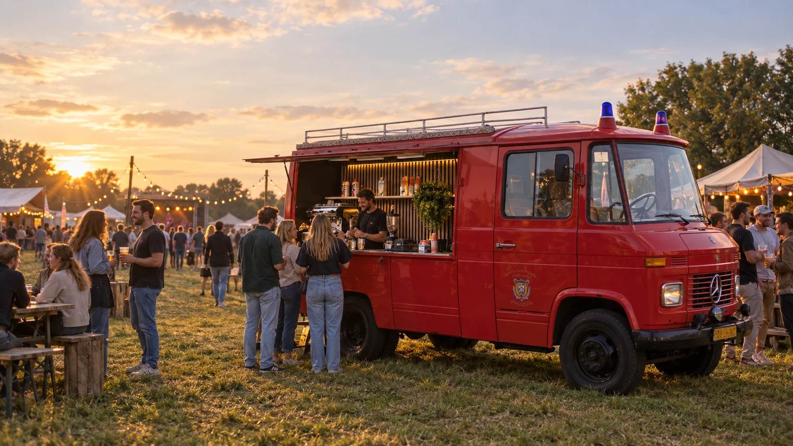
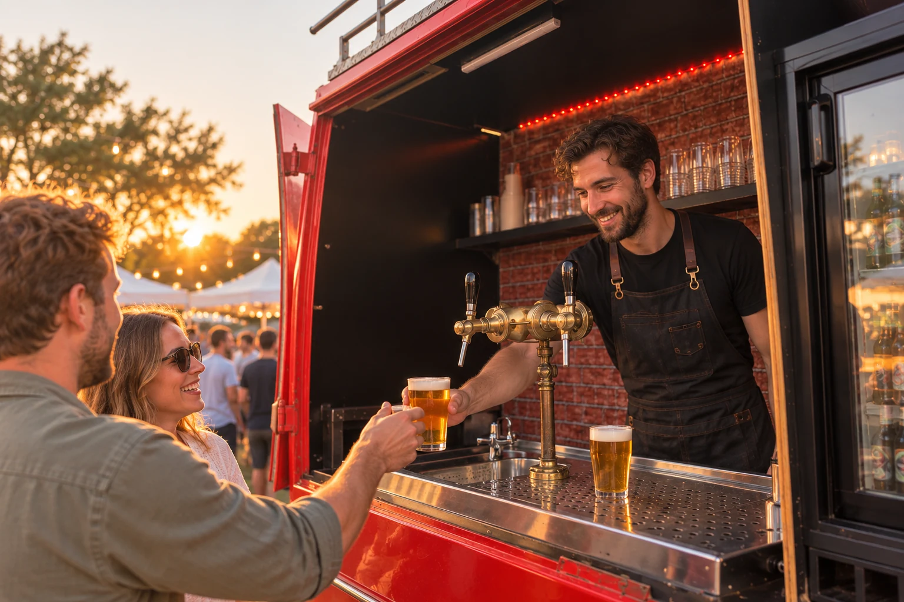
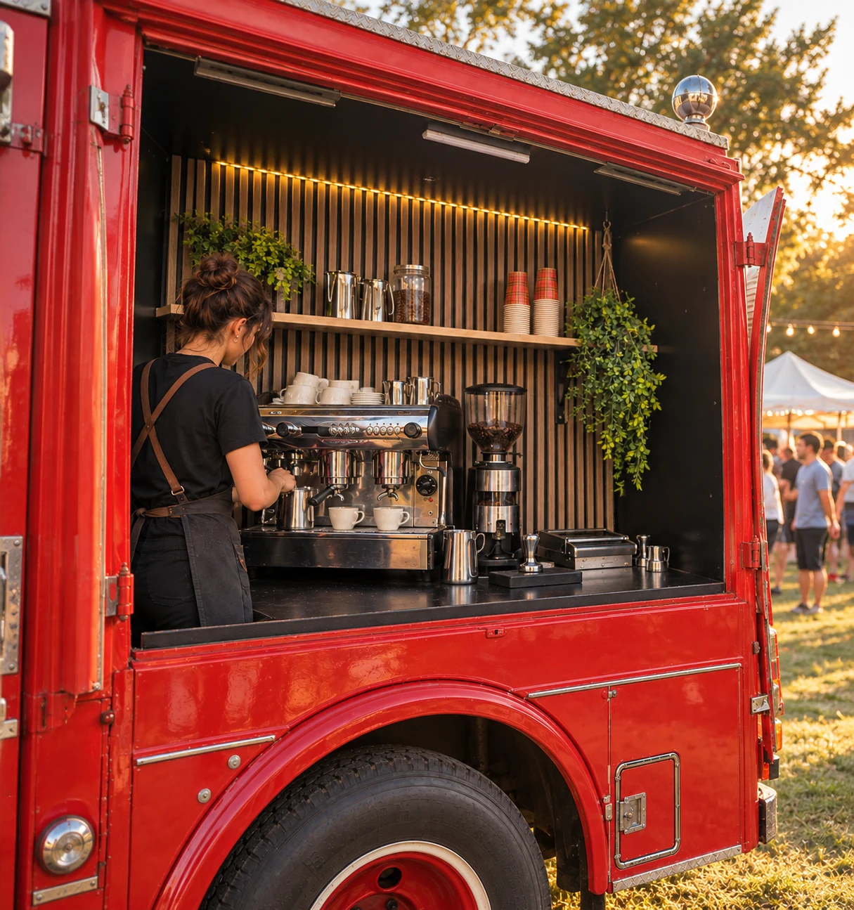
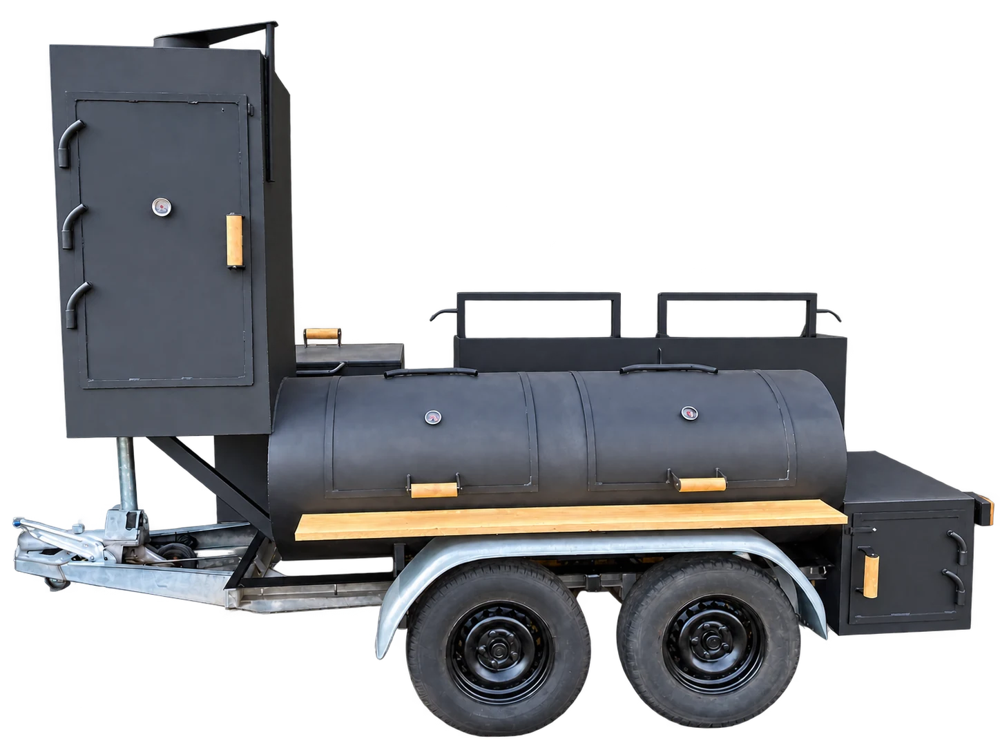
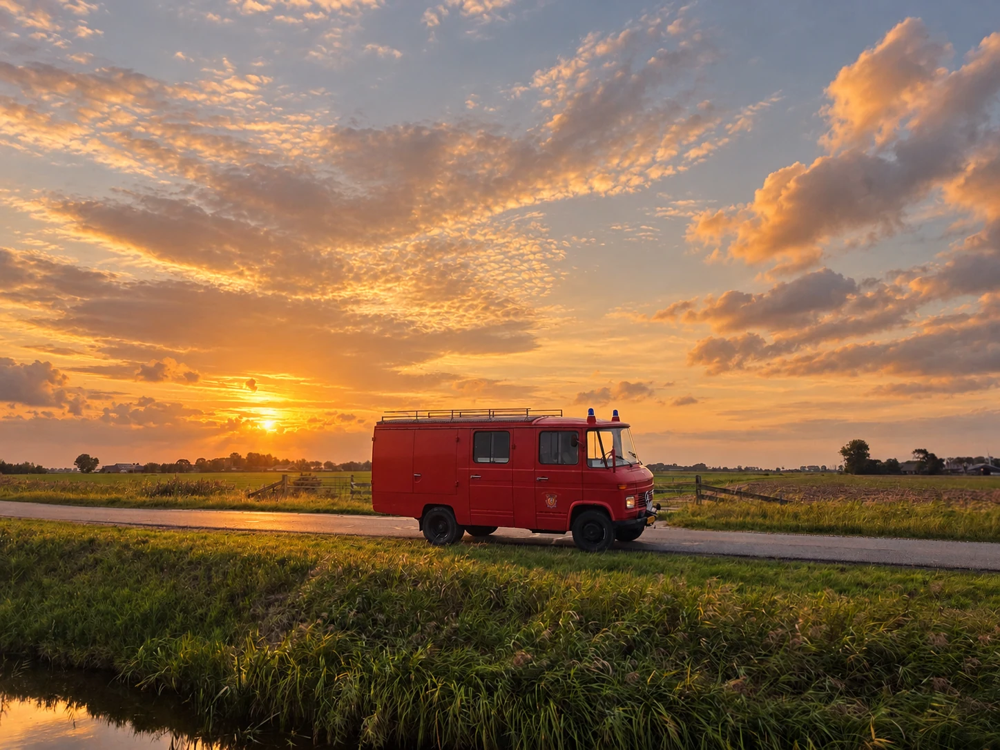
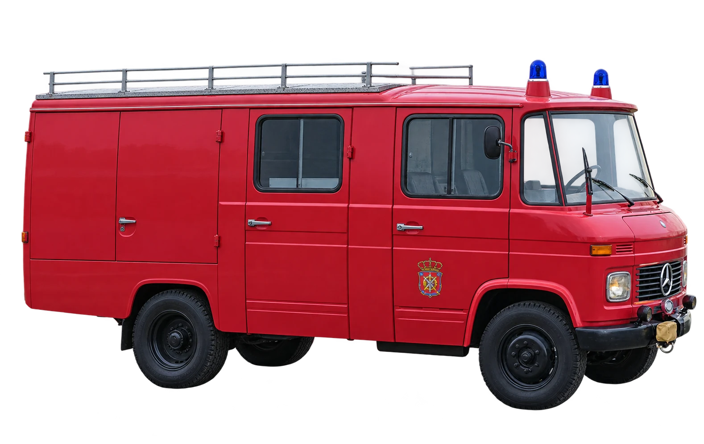

Samenkomen

Voor de DorstDie Geblust Moet worden
Een brandweerwagen uit 1962. Koffie aan de ene kant, koud bier aan de andere.
Twee kanten / één wagen
Twee kanten.Één Smokeblusser.
Van een goede kop koffie tot een vers getapt biertje. Twee bars aan één wagen, elk met een eigen karakter.
Bekijk het menu

Binnenkort / de derde kant
Er komt iets heets aan.
De Smokeblusser krijgt gezelschap van een smoker op wielen. Voor live fire, langzaam garen en eten waar je even voor blijft staan.

Low & slow
Open vuur
Op locatie
De mogelijkheden
Een blikvanger voor jouw evenement.
Van een intiem feest tot een terrein vol mensen: de Smokeblusser brengt sfeer mee.
Vieren
Bruiloft
Beleven
Festival & event
Dichtbij
Privéfeest
Sfeer / in beweging
Zie ’m in actie.
Het verhaal / bouwjaar 1962
Van brandweerwagen naar bar op wielen.

Een nieuw hoofdstuk
Gebouwd voor een ander doel. Klaar voor nieuwe verhalen.
Een brandweerwagen uit 1962, gebouwd voor een heel ander doel. Jaren later kreeg deze klassieker een tweede leven.
Geen haastige ombouw, maar aandacht voor het origineel — met goede koffie, koud bier en een plek waar mensen graag even blijven hangen.
Lees het verhaalKlaar voor jouw evenement
Zet deze klassiekerOp jouw evenement.
Vertel ons waar en wanneer je iets te vieren hebt. Dan bekijken we de beschikbaarheid en ontvang je alle mogelijkheden.
Nog vragen? Bekijk de veelgestelde vragen
